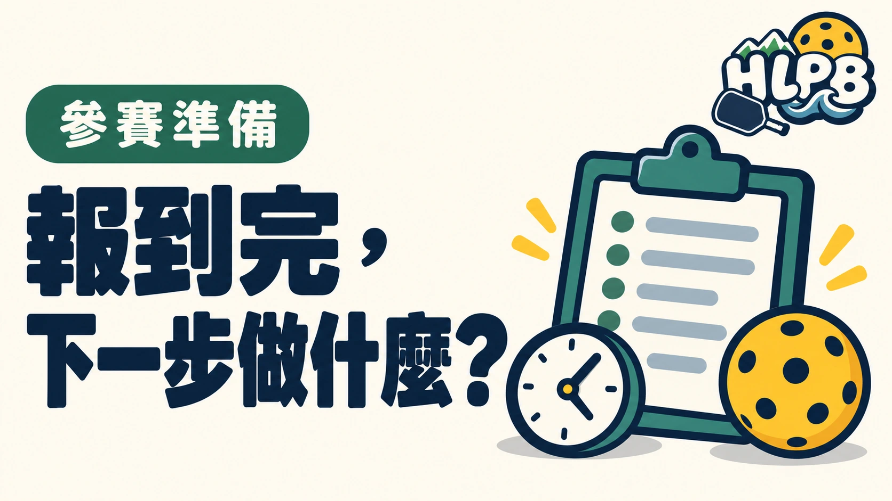

完成報到，不代表已確認自己的下一場比賽。第一次參賽，報到後最值得處理的是組別、賽程、通知方式與比賽場地，避免一直等別人來找。
報到後，依序確認四件事
| 要確認的資訊 | 為什麼重要 |
|---|---|
| 姓名、搭檔與組別 | 避免看錯名單或賽程 |
| 第一場與後續場次 | 知道目前在等哪一場 |
| 叫場與變更通知方式 | 能找到最新安排 |
| 暖身及候場位置 | 準備時不影響進行中的比賽 |
賽程截圖可以留存，但也要記得何時取得。大會更換場地、調整場次或更新公告後，舊截圖不會自動變成最新版本。若不同資訊互相矛盾，向大會確認採用哪一份。
哪些資料適合放在一起？
HLPB 建議把報到確認、組別、官方賽程入口與重要聯絡方式集中保存。雙打可約好由一人留意公告、另一人協助確認裝備，兩人都知道下一步，不完全依靠搭檔代記。
別把等待時間當成固定休息時間
還沒輪到自己，也要留意叫場範圍和最新通知。是否能離開會場、多久前要到場，各賽事不同；本文不設定一個所有比賽都適用的報到或候場分鐘數。
這是一份 HLPB 參賽準備清單，不是特定花蓮賽事的現場流程。
延伸閱讀：花蓮匹克球比賽，為什麼不能只看一般規則？、第一次參加花蓮匹克球比賽，循環賽與淘汰賽差在哪？。
資料來源：USA Pickleball 首次參賽指南。
內容更新：2026-10-20｜資料來源：USA Pickleball 官方資料
返回文章列表